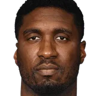

Lance Stephenson
2010-11 to 2021-22 · Career Map
 Indiana,
Indiana,  Charlotte,
Charlotte,  LA Clippers,
LA Clippers,  Memphis,
Memphis,  New Orleans,
New Orleans,  Minnesota,
Minnesota,  LA Lakers,
LA Lakers,  Atlanta
Atlanta
His best final NBA finish was #4 of 30, with the 2013-14 Indiana Pacers. In his 554 games for 8 teams over 10 seasons they went 286–268 (51.6%), +18 games over .500, with an average final finish of 12.9. The biggest one-season rise in his career: the Indiana Pacers went from #16 in 2010-11 to #5 in 2011-12.
Jump to: Record by opponent · Season by season · Teammate help
Compare Lance Stephenson with…
Suggested, same era and similar teammate help:


Final NBA finish, season by season
Title Finals Other playoffs Missed playoffs. #1 = champion; the dashed line is last place that season. Each point opens that season's final standings.
All 30 teams ranked in 2013-14, his best finish (#4)Teammate help
 Paul George8.94 seasons
Paul George8.94 seasons Chris Paul5.01 season
Chris Paul5.01 season DeAndre Jordan5.01 season
DeAndre Jordan5.01 season
Career
Career records (W–L, W − L, with and without) include 2026-27 games through Nov. 23, 2026; season counts and finishes are through 2025-26. Each card opens its board in the same scope. How we count.

Latest completed seasons
Season by season
Newest first; every header sorts. Final NBA finish is the team's rank among all teams that season (#1 = champion) and opens that season's standings. "Without him" uses the team-season window; the span line counts only the games between his first and last game for the team.
| 2021-22 | #15 of 30 | 43–39 52.4% | Lost 1st round 1–4 | 6 of 82 | 2–4 33.3% | 14–15 48.3%span: N/A, gap N/A | −14.9 | |
| 2021-22 | #26 of 30 | 25–57 30.5% | Missed playoffs | 40 of 82 | 9–31 22.5% | 2–4 33.3%span: 2–4, gap −10.8 | −10.8 | |
| 2018-19 | #20 of 30 | 37–45 45.1% | Missed playoffs | 68 of 82 | 33–35 48.5% | 4–10 28.6%span: 2–9, gap +30.3 | +20.0 | |
| 2017-18 | #10 of 30 | 48–34 58.5% | Lost 1st round 3–4 | 82 of 82 | 48–34 58.5% | N/A | N/A | |
| 2016-17 | #21 of 30 | 34–48 41.5% | Missed playoffs | 6 of 82 | 0–6 0.0% | 20–26 43.5%span: N/A, gap N/A | −43.5 | |
| 2016-17 | #24 of 30 | 31–51 37.8% | Missed playoffs | 6 of 82 | 3–3 50.0% | 26–39 40.0%span: 6–3, gap −16.7 | +10.0 | |
| 2016-17 | #13 of 30 | 42–40 51.2% | Lost 1st round 0–4 | 6 of 82 | 5–1 83.3% | 2–6 25.0%span: N/A, gap N/A | +58.3 | |
| 2015-16 | #9 of 30 | 53–29 64.6% | Lost 1st round 2–4 | 43 of 82 | 27–16 62.8% | 9–3 75.0%span: 8–2, gap −17.2 | −12.2 | |
| 2015-16 | #14 of 30 | 42–40 51.2% | Lost 1st round 0–4 | 26 of 82 | 9–17 34.6% | 2–1 66.7%span: 1–1, gap −15.4 | −32.1 | |
| 2014-15 | #22 of 30 | 33–49 40.2% | Missed playoffs | 61 of 82 | 23–38 37.7% | 10–11 47.6%span: 10–6, gap −24.8 | −9.9 | |
| 2013-14 | #4 of 30 | 56–26 68.3% | Lost conf finals 2–4 | 78 of 82 | 53–25 67.9% | 3–1 75.0%span: 2–1, gap +1.3 | −7.1 | |
| 2012-13 | #4 of 30 | 49–32 60.5% | Lost conf finals 3–4 | 78 of 81 | 46–32 59.0% | 3–0 100.0%span: 3–0, gap −41.0 | −41.0 | |
| 2011-12 | #5 of 30 | 42–24 63.6% | Lost conf semis 2–4 | 42 of 66 | 25–17 59.5% | 17–7 70.8%span: 17–7, gap −11.3 | −11.3 | |
| 2010-11 | #16 of 30 | 37–45 45.1% | Lost 1st round 1–4 | 12 of 82 | 3–9 25.0% | 34–36 48.6%span: 3–1, gap −50.0 | −23.6 |
On/off, starts and close games
From the lineup data, 1996-97 on. On/off is net points per 100 possessions with him on the floor minus off, a different unit from the win-rate gaps. Started and off the bench are team records in those games; close games are those within 5 points in the last 5 minutes with him on the floor.
| 2021-22 | +19.0 | N/A | 2–4 33.3% | 0–1 0.0% | |
| 2021-22 | −0.9 | 0–1 0.0% | 9–30 23.1% | 2–6 25.0% | |
| 2018-19 | −4.7 | 1–2 33.3% | 32–33 49.2% | 3–6 33.3% | |
| 2017-18 | −7.6 | 0–7 0.0% | 48–27 64.0% | 11–12 47.8% | |
| 2016-17 | +7.7 | N/A | 0–6 0.0% | 0–4 0.0% | |
| 2016-17 | −15.0 | N/A | 3–3 50.0% | 1–0 100.0% | |
| 2016-17 | −1.9 | N/A | 5–1 83.3% | 0–1 0.0% | |
| 2015-16 | −8.4 | 5–5 50.0% | 22–11 66.7% | 0–5 0.0% | |
| 2015-16 | +5.1 | 1–2 33.3% | 8–15 34.8% | 5–9 35.7% | |
| 2014-15 | −6.4 | 6–19 24.0% | 17–19 47.2% | 9–10 47.4% | |
| 2013-14 | +3.0 | 53–25 67.9% | N/A | 23–10 69.7% | |
| 2012-13 | +10.1 | 44–28 61.1% | 2–4 33.3% | 18–15 54.5% | |
| 2011-12 | −9.3 | 0–1 0.0% | 25–16 61.0% | N/A | |
| 2010-11 | +12.2 | N/A | 3–9 25.0% | N/A |
Teammate help by season
Help this season = Teammates Score points for honors won that season by teammates who shared a game with him, with every teammate that adds to it. Only honors won in that same season count. How help works.
- 2021-22
 Atlanta
Atlanta
 Trae Young All-NBA 3rdAll-Star33 g
Trae Young All-NBA 3rdAll-Star33 g
Help this season: 3 = 3 Trae Young
Other teammates (no honors that season): Skylar Mays 6 g, Cam Reddish 6 g, Bogdan Bogdanovic 4 g, Clint Capela 4 g, Gorgui Dieng 4 g, Malcolm Hill 3 g, Chaundee Brown 3 g, Jalen Johnson 3 g, Wesley Iwundu 3 g, John Collins 3 g, Anthony Barber 3 g, Delon Wright 3 g, Onyeka Okongwu 2 g, Cameron Oliver 2 g and 2 more
- 2021-22
 Indiana
Indiana
 Chris Duarte All-Rookie 2nd0.12518 g
Chris Duarte All-Rookie 2nd0.12518 g
Help this season: 0.125 = 0.125 Chris Duarte
Other teammates (no honors that season): Duane Washington Jr 37 g, Oshae Brissett 36 g, Terry Taylor 29 g, Keifer Sykes 25 g, Goga Bitadze 24 g, Isaiah Jackson 21 g, Tyrese Haliburton 20 g, Buddy Hield 20 g, Justin Holiday 19 g, Torrey Craig 18 g, Jalen Smith 16 g, Jeremy Lamb 13 g, Justin Anderson 13 g, Domantas Sabonis 12 g and 9 more
- 2018-19
 LA Lakers
LA Lakers
 LeBron James All-NBA 3rdAll-Star346 g
LeBron James All-NBA 3rdAll-Star346 g
Help this season: 3 = 3 LeBron James
Other teammates (no honors that season): Kentavious Caldwell-Pope 68 g, JaVale McGee 62 g, Kyle Kuzma 60 g, Josh Hart 58 g, Brandon Ingram 49 g, Lonzo Ball 46 g, Tyson Chandler 45 g, Sviatoslav Mykhailiuk 39 g, Rajon Rondo 34 g, Ivica Zubac 32 g, Moritz Wagner 31 g, Michael Beasley 26 g, Isaac Bonga 15 g, Johnathan Williams 14 g and 5 more
- 2017-18Indiana
 Victor Oladipo All-NBA 3rdAll-StarAll-Def 1stMIP4.2575 g
Victor Oladipo All-NBA 3rdAll-StarAll-Def 1stMIP4.2575 g
Help this season: 4.25 = 4.25 Victor Oladipo
Other teammates (no honors that season): Cory Joseph 82 g, Thaddeus Young 81 g, Bojan Bogdanovic 80 g, Domantas Sabonis 74 g, Darren Collison 69 g, Myles Turner 65 g, TJ Leaf 53 g, Joseph Young 53 g, Al Jefferson 36 g, Alex Poythress 25 g, Glenn Robinson III 23 g, Damien Wilkins 19 g, Trevor Booker 17 g, Ike Anigbogu 11 g and 3 more
- 2016-17
 New Orleans
New Orleans
 Anthony Davis All-NBA 1stAll-StarAll-Def 2ndAll-Star MVP66 g
Anthony Davis All-NBA 1stAll-StarAll-Def 2ndAll-Star MVP66 g Buddy Hield All-Rookie 1st0.256 g
Buddy Hield All-Rookie 1st0.256 g
Help this season: 6.25 = 6 Anthony Davis + 0.25 Buddy Hield
Other teammates (no honors that season): Langston Galloway 6 g, Tim Frazier 6 g, Solomon Hill 6 g, E'Twaun Moore 6 g, Omer Asik 6 g, Terrence Jones 5 g, Dante Cunningham 5 g, Alexis Ajinca 3 g, Cheick Diallo 1 g
- 2016-17
 MinnesotaHelp this season: 0, no honored teammate
MinnesotaHelp this season: 0, no honored teammate - 2016-17Indiana
Paul George All-Star16 g
Help this season: 1 = 1 Paul George
Other teammates (no honors that season): Kevin Seraphin 6 g, Jeff Teague 6 g, Aaron Brooks 6 g, Thaddeus Young 6 g, Myles Turner 6 g, Monta Ellis 6 g, CJ Miles 6 g, Lavoy Allen 4 g, Rakeem Christmas 4 g, Joseph Young 3 g
- 2015-16
 LA Clippers
DeAndre Jordan All-NBA 1stAll-Def 1st542 gChris Paul All-NBA 2ndAll-StarAll-Def 1st538 g
LA Clippers
DeAndre Jordan All-NBA 1stAll-Def 1st542 gChris Paul All-NBA 2ndAll-StarAll-Def 1st538 g Jamal Crawford Sixth Man0.543 g
Jamal Crawford Sixth Man0.543 g
Help this season: 10.5 = 5 DeAndre Jordan + 5 Chris Paul + 0.5 Jamal Crawford
Other teammates (no honors that season): Wesley Johnson 43 g, Luc Mbah a Moute 41 g, JJ Redick 40 g, Paul Pierce 38 g, Austin Rivers 36 g, Josh Smith 29 g, Blake Griffin 28 g, Pablo Prigioni 25 g, Cole Aldrich 23 g, CJ Wilcox 8 g, Jeff Ayres 5 g, Branden Dawson 2 g
- 2015-16
 Memphis
Memphis
 Tony Allen All-Def 2nd0.515 g
Tony Allen All-Def 2nd0.515 g
Help this season: 0.5 = 0.5 Tony Allen
Other teammates (no honors that season): JaMychal Green 26 g, Matt Barnes 24 g, Vince Carter 23 g, Jarell Martin 23 g, Chris Andersen 18 g, Zach Randolph 18 g, PJ Hairston 16 g, Ryan Hollins 16 g, Xavier Munford 13 g, Jordan Farmar 11 g, Mario Chalmers 10 g, Ray McCallum 9 g, Mike Conley 8 g, Briante Weber 5 g and 4 more
- 2014-15
 CharlotteHelp this season: 0, no honored teammate
CharlotteHelp this season: 0, no honored teammate - 2013-14Indiana
Paul George All-NBA 3rdAll-StarAll-Def 1st478 g

Roy Hibbert All-StarAll-Def 2nd1.578 gHelp this season: 5.5 = 4 Paul George + 1.5 Roy Hibbert
Other teammates (no honors that season): David West 78 g, Luis Scola 78 g, Ian Mahinmi 74 g, George Hill 73 g, CJ Watson 60 g, Rasual Butler 46 g, Donald Sloan 46 g, Chris Copeland 39 g, Orlando Johnson 38 g, Danny Granger 27 g, Solomon Hill 26 g, Evan Turner 25 g, Lavoy Allen 12 g, Andrew Bynum 2 g
- 2012-13Indiana
Paul George All-NBA 3rdAll-StarAll-Def 2ndMIP3.7576 g
Help this season: 3.75 = 3.75 Paul George
Other teammates (no honors that season): Tyler Hansbrough 78 g, Ian Mahinmi 77 g, Roy Hibbert 76 g, DJ Augustin 75 g, George Hill 74 g, David West 71 g, Gerald Green 57 g, Sam Young 53 g, Orlando Johnson 50 g, Jeff Ayres 35 g, Ben Hansbrough 25 g, Miles Plumlee 14 g, Danny Granger 5 g, Dominic McGuire 2 g
- 2011-12Indiana
Roy Hibbert All-Star141 g
Help this season: 1 = 1 Roy Hibbert
Other teammates (no honors that season): Dahntay Jones 42 g, David West 42 g, Paul George 42 g, Tyler Hansbrough 42 g, Darren Collison 41 g, Danny Granger 38 g, Louis Amundson 37 g, AJ Price 31 g, George Hill 26 g, Jeff Ayres 19 g, Jeff Foster 9 g, Leandro Barbosa 5 g, Kyrylo Fesenko 2 g
- 2010-11Indiana
Paul George All-Rookie 2nd0.12512 g
Help this season: 0.125 = 0.125 Paul George
Other teammates (no honors that season): Dahntay Jones 12 g, Darren Collison 12 g, Tyler Hansbrough 12 g, Roy Hibbert 12 g, Brandon Rush 12 g, Josh McRoberts 12 g, Danny Granger 12 g, AJ Price 11 g, Jeff Foster 10 g, James Posey 2 g, Solomon Jones 1 g
Record against each opponent
- Best regular-season record against one franchise: 14–9 (60.9%) against the Brooklyn Nets in 23 games.
- Toughest regular-season record against one franchise: 9–13 (40.9%) against the Boston Celtics in 22 games.
- Most playoff series against one franchise: 3 against the Miami Heat, 0–3 in series and 6–9 in games.
Regular season, through 2025-26 (2026-27 games not included): 554 games, 286–268, against 30 franchises.
Grouped by franchise (named as today); game lists keep each team's name that season. Filters and the tab are kept in the URL, so a filtered view can be shared.
| Games list | |||||||
|---|---|---|---|---|---|---|---|
| 27 | 15–12 | 55.6% | +3 | 0–2 (3–8 in games) | 2011-12 to 2021-22 | ||
| 25 | 14–11 | 56.0% | +3 | N/A | 2011-12 to 2021-22 | ||
| 24 | 13–11 | 54.2% | +2 | 1–0 (2–0 in games) | 2011-12 to 2021-22 | ||
| 23 | 14–9 | 60.9% | +5 | N/A | 2010-11 to 2021-22 | ||
| 22 | 9–13 | 40.9% | −4 | N/A | 2010-11 to 2021-22 | ||
| 22 | 12–10 | 54.5% | +2 | 0–3 (6–9 in games) | 2011-12 to 2018-19 | ||
| 22 | 9–13 | 40.9% | −4 | N/A | 2011-12 to 2021-22 | ||
| 21 | 11–10 | 52.4% | +1 | 2–0 (8–5 in games) | 2011-12 to 2021-22 | ||
| 21 | 11–10 | 52.4% | +1 | N/A | 2010-11 to 2021-22 | ||
| 20 | 12–8 | 60.0% | +4 | N/A | 2011-12 to 2021-22 | ||
| 20 | 9–11 | 45.0% | −2 | N/A | 2010-11 to 2021-22 | ||
| 20 | 10–10 | 50.0% | 0 | N/A | 2010-11 to 2021-22 | ||
| 19 | 13–6 | 68.4% | +7 | N/A | 2011-12 to 2021-22 | ||
| 19 | 9–10 | 47.4% | −1 | N/A | 2010-11 to 2021-22 | ||
| 19 | 12–7 | 63.2% | +5 | 1–0 (4–2 in games) | 2011-12 to 2021-22 | ||
| 18 | 13–5 | 72.2% | +8 | N/A | 2010-11 to 2021-22 | ||
| 18 | 9–9 | 50.0% | 0 | 1–0 (4–2 in games) | 2011-12 to 2021-22 | ||
| 18 | 12–6 | 66.7% | +6 | N/A | 2010-11 to 2021-22 | ||
| 17 | 7–10 | 41.2% | −3 | N/A | 2010-11 to 2021-22 | ||
| 17 | 7–10 | 41.2% | −3 | N/A | 2010-11 to 2021-22 | ||
| 16 | 6–10 | 37.5% | −4 | N/A | 2011-12 to 2021-22 | ||
| 16 | 10–6 | 62.5% | +4 | N/A | 2011-12 to 2021-22 | ||
| 16 | 4–12 | 25.0% | −8 | 0–1 (0–4 in games) | 2012-13 to 2018-19 | ||
| 15 | 9–6 | 60.0% | +3 | N/A | 2012-13 to 2021-22 | ||
| 15 | 11–4 | 73.3% | +7 | N/A | 2011-12 to 2021-22 | ||
| 15 | 9–6 | 60.0% | +3 | N/A | 2011-12 to 2021-22 | ||
| 14 | 5–9 | 35.7% | −4 | N/A | 2010-11 to 2021-22 | ||
| 14 | 3–11 | 21.4% | −8 | N/A | 2010-11 to 2021-22 | ||
| 14 | 6–8 | 42.9% | −2 | N/A | 2011-12 to 2021-22 | ||
| 7 | 2–5 | 28.6% | −3 | N/A | 2014-15 to 2018-19 |
Rows add up to his career record in his games. A playoff series counts when he played in it; early round-robin games show as games only. How we count.
Playoffs, with and without him
| 2017-18 | Lost in the first round 3–4 to | #10 of 30 | 7 of 7 | 3–4 42.9% | N/A | N/A | |
| 2016-17 | Lost in the first round 0–4 to | #13 of 30 | 4 of 4 | 0–4 0.0% | N/A | N/A | |
| 2015-16 | Lost in the first round 0–4 to | #14 of 30 | 4 of 4 | 0–4 0.0% | N/A | N/A | |
| 2013-14 | Lost in the conference finals 2–4 to | #4 of 30 | 19 of 19 | 10–9 52.6% | N/A | N/A | |
| 2012-13 | Lost in the conference finals 3–4 to | #4 of 30 | 19 of 19 | 11–8 57.9% | N/A | N/A | |
| 2011-12 | Lost in the conference semifinals 2–4 to | #5 of 30 | 4 of 11 | 3–1 75.0% | 3–4 42.9% | +32.1 |
Arrival and departure
Team wins per 82 games the season before he arrived vs his first season there, and his last season vs the season after he left. He leaves a team only when his next season with games is for another team (or he never plays again); whole seasons he missed and came back from are one "Missed" row with the team's record without him. Per 82 so short seasons compare fairly. These are team records, not a measure of what he did.
| Left | after 2021-22 | 2021-22: 43–39 43.0 per 82 | 2022-23: 41–41 41.0 per 82 without him | −2.0 wins | |
| Left | after 2021-22 | 2021-22: 25–57 25.0 per 82 | 2022-23: 35–47 35.0 per 82 without him | +10.0 wins | |
| Arrived | 2021-22 | 2020-21: 41–31 46.7 per 82 | 2021-22: 43–39 43.0 per 82 | −3.7 wins | |
| Arrived | 2021-22 | 2020-21: 34–38 38.7 per 82 | 2021-22: 25–57 25.0 per 82 | −13.7 wins | |
| Left | after 2018-19 | 2018-19: 37–45 37.0 per 82 | 2019-20: 52–19 60.1 per 82 without him | +23.1 wins | |
| Arrived | 2018-19 | 2017-18: 35–47 35.0 per 82 | 2018-19: 37–45 37.0 per 82 | +2.0 wins | |
| Left | after 2017-18 | 2017-18: 48–34 48.0 per 82 | 2018-19: 48–34 48.0 per 82 without him | +0.0 wins | |
| Left | after 2016-17 | 2016-17: 34–48 34.0 per 82 | 2017-18: 48–34 48.0 per 82 without him | +14.0 wins | |
| Left | after 2016-17 | 2016-17: 31–51 31.0 per 82 | 2017-18: 47–35 47.0 per 82 without him | +16.0 wins | |
| Arrived | 2016-17 | 2015-16: 30–52 30.0 per 82 | 2016-17: 34–48 34.0 per 82 | +4.0 wins | |
| Arrived | 2016-17 | 2015-16: 29–53 29.0 per 82 | 2016-17: 31–51 31.0 per 82 | +2.0 wins | |
| Arrived | 2016-17 | 2015-16: 45–37 45.0 per 82 | 2016-17: 42–40 42.0 per 82 | −3.0 wins | |
| Left | after 2015-16 | 2015-16: 53–29 53.0 per 82 | 2016-17: 51–31 51.0 per 82 without him | −2.0 wins | |
| Left | after 2015-16 | 2015-16: 42–40 42.0 per 82 | 2016-17: 43–39 43.0 per 82 without him | +1.0 wins | |
| Arrived | 2015-16 | 2014-15: 56–26 56.0 per 82 | 2015-16: 53–29 53.0 per 82 | −3.0 wins | |
| Arrived | 2015-16 | 2014-15: 55–27 55.0 per 82 | 2015-16: 42–40 42.0 per 82 | −13.0 wins | |
| Left | after 2014-15 | 2014-15: 33–49 33.0 per 82 | 2015-16: 48–34 48.0 per 82 without him | +15.0 wins | |
| Arrived | 2014-15 | 2013-14: 43–39 43.0 per 82 | 2014-15: 33–49 33.0 per 82 | −10.0 wins | |
| Left | after 2013-14 | 2013-14: 56–26 56.0 per 82 | 2014-15: 38–44 38.0 per 82 without him | −18.0 wins | |
| Debut | 2010-11 | 2009-10: 32–50 32.0 per 82 | 2010-11: 37–45 37.0 per 82 | +5.0 wins |
Seasons split between teams
Each team's record before his first game for it, inside his window (games with and without him) and after his last game, in the seasons he played for two or more teams.
| 2021-22 | Dec. 22, 2021 to Dec. 31, 2021 | N/A | 16–19 45.7% | 27–20 57.4% | 6 | |
| 2021-22 | Jan. 2, 2022 to April 10, 2022 | 14–22 38.9% | 11–35 23.9% | N/A | 40 | |
| 2016-17 | Oct. 26, 2016 to Nov. 4, 2016 | N/A | 20–32 38.5% | 14–16 46.7% | 6 | |
| 2016-17 | Feb. 8, 2017 to March 15, 2017 | 1–3 25.0% | 29–42 40.8% | 1–6 14.3% | 6 | |
| 2016-17 | April 2, 2017 to April 12, 2017 | 35–33 51.5% | 7–7 50.0% | N/A | 6 | |
| 2015-16 | Oct. 28, 2015 to Feb. 10, 2016 | N/A | 36–19 65.5% | 17–10 63.0% | 43 | |
| 2015-16 | Feb. 21, 2016 to April 13, 2016 | 31–22 58.5% | 11–18 37.9% | N/A | 26 |
Best duos
Team record in regular-season games both played, top 10 by win %, at least 50 games together.
 CJ Watson
46–14 76.7%
CJ Watson
46–14 76.7% Orlando Johnson
61–27 69.3%
Orlando Johnson
61–27 69.3% Luis Scola
53–25 67.9%
Luis Scola
53–25 67.9%- Victor Oladipo
48–27 64.0%
 George Hill
110–63 63.6%
George Hill
110–63 63.6% Ian Mahinmi
95–56 62.9%
Ian Mahinmi
95–56 62.9% Jeff Ayres
37–22 62.7%
Jeff Ayres
37–22 62.7% David West
119–72 62.3%
David West
119–72 62.3%- Sam Young 33–20 62.3%
 Danny Granger
51–31 62.2%
Danny Granger
51–31 62.2%
With and without his teammates
His 12 teammates with the most regular-season games together. "Together" is the team's record in the games both played for it; "Without him" is the team's record in the games Lance Stephenson played for that team while the teammate was on it (between the teammate's first and last game for the team, the appearance span) and the teammate did not play. Fewer than 20 games without him: no gap. Games through Nov. 23, 2026. How we count.
- Paul GeorgeIndiana 2010-11 to 2013-14; Indiana 2016-17
- Together
- 131–83 61.2%
- Without him
- 1–0 100.0%
- Gap
- Too few games without him
- Roy HibbertIndiana 2010-11 to 2013-14
- Together
- 126–81 60.9%
- Without him
- 1–1 50.0%
- Gap
- Too few games without him
- David WestIndiana 2011-12 to 2013-14
- Together
- 119–72 62.3%
- Without him
- 5–1 83.3%
- Gap
- Too few games without him
- George HillIndiana 2011-12 to 2013-14
- Together
- 110–63 63.6%
- Without him
- 14–10 58.3%
- Gap
- 5.3 points lower
- Ian MahinmiIndiana 2012-13 to 2013-14
- Together
- 95–56 62.9%
- Without him
- 4–1 80.0%
- Gap
- Too few games without him
 Tyler HansbroughIndiana 2010-11 to 2012-13
Tyler HansbroughIndiana 2010-11 to 2012-13- Together
- 74–58 56.1%
- Without him
- N/A N/A
- Gap
- Too few games without him
 Darren CollisonIndiana 2010-11 to 2011-12; Indiana 2017-18
Darren CollisonIndiana 2010-11 to 2011-12; Indiana 2017-18- Together
- 66–56 54.1%
- Without him
- 10–4 71.4%
- Gap
- Too few games without him
 Al JeffersonCharlotte 2014-15; Indiana 2017-18
Al JeffersonCharlotte 2014-15; Indiana 2017-18- Together
- 37–55 40.2%
- Without him
- 32–16 66.7%
- Gap
- 26.4 points higher
- Orlando JohnsonIndiana 2012-13 to 2013-14
- Together
- 61–27 69.3%
- Without him
- 23–16 59.0%
- Gap
- 10.3 points lower
 Thaddeus YoungIndiana 2016-17 to 2017-18
Thaddeus YoungIndiana 2016-17 to 2017-18- Together
- 53–34 60.9%
- Without him
- N/A N/A
- Gap
- Too few games without him
 Domantas SabonisIndiana 2017-18; Indiana 2021-22
Domantas SabonisIndiana 2017-18; Indiana 2021-22- Together
- 48–38 55.8%
- Without him
- 5–10 33.3%
- Gap
- Too few games without him
- Danny GrangerIndiana 2010-11 to 2013-14
- Together
- 51–31 62.2%
- Without him
- 0–2 0.0%
- Gap
- Too few games without him